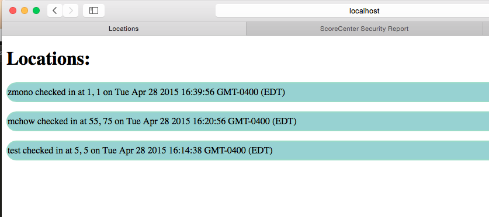
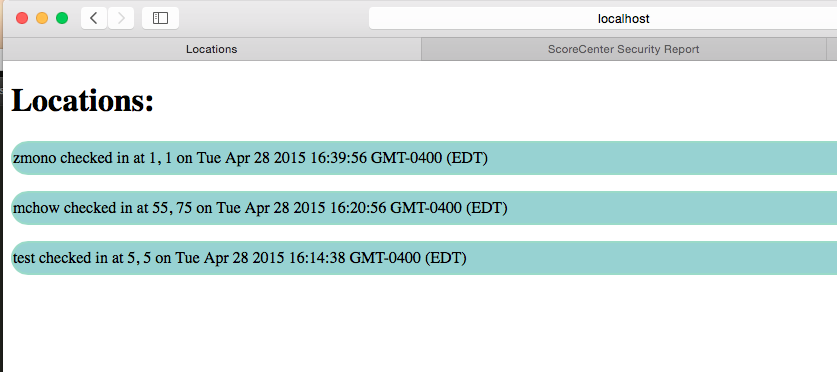

COMP 20: Assignment 4
Analysis by Zoe Monosson
Introduction:
This assessment analyzes the security and privacy of the sever for the Real Marauder's Map by rlarson for
Comp20's Assignment 3. The server uses Heroku, Node.js with the Express web framework, and MongoDB in order
to create "a web application that maintains "location check-ins" (login, latitude, and longitude) for a long
period of time." This web application was specifically made to work with Comp20's Assignment 2 to create a
Marauder's Map. This Marauder's Map takes the login names, latitudes and longitudes stored in the database and
outputs each login on Google Maps based on the location stored on the server. For this particular assessment,
outlines potential vulnerabilities found in the server in the web application.
Methodology
The methodology used for finding security and privacy vulnerabilities was primarily using the "black box"
method. The "black box" method entails hacking and editing the code without understanding how it fundametnally
works or runs. The vulnerabilities were testing by using curl commands (i.e. curl --data "login=param&lat=param&lng=param"
http://assignment-3.herokuapp.com/sendLocation) to send parameters to the database and searching for data by directly inputting
into the URL (i.e. assignment-3.herokuapp.com/location.json?login=mchow). After using the "black box" method to test the
vulnerabilites, the code was looked over to find the specific points that these issues could have occurred.
Abstract of Findings
Many of the vulnerabilities discovered in this assessment occurred because the server trusts the user that the data that
he or she is inputting is good data. Bad data is something that could change what is viewed on the website or allows for users
to view the "what should be private" data inputted by other individuals and therefore is breaking the privacy that those
other individuals thought they had. One main recommendation for fixing these vulnerabilites is to check and clean both the input
sent by the users before entering it in the database as well as to check and clean the data before printing it on the
website.
Issues Found
- Cross Site Scripting (XSS) Vulernability
- This vulernability was found by inputing code into the login field instead of a string name.
Multiple attacks were tried such as using script code to insert a picture into the background
of the website such as:
-
curl --data "'open script tag' window.document.body.innerHTML=
''open style tag here'body{background-image:url(input image here);
background-size:20%;})'close style tag here'';
'close script tag' http://assignment-3.herokuapp.com/sendLocation
- The XSS security issue is located within the POST request in '/sendLocation' because the vulnerability
resides in the concept that the code currently does not check what is being inputted unless
nothing is being inputted.There is no error check to see if "evil" code is being added into the information
given by the user.
- The severity of this issue is moderate because it is easy to redirect or covered the page with so
much random information that the purpose of the website becomes defeated if the login information
cannot be viewed and compromises its functionality.
- Proof of Vulnerability:
- A potential solution for this would be to check and clean any inputted login information after the POST
request has been completed, but before it is actually stored in the database and outputted onto the website
when the GET request is called on the server.
- Code Injection
- This security issue takes place in the /location.json feature that searches for a the specific information
associated with a certain username. The code was written so that if the login is undefined, then an empty
JSON array is sent back or if the login matches a login in the database, then the login, lat, lng, and date
created are outputted to the user. This issue of code injection returns an associative array of all the logins
and related information of every login in the database except for the one searched for.
-
The typical syntax would be:
http://assignment-3.herokuapp.com/location.json?login=mchow.
-
However, the code injection looks like:
http://assignment-3.herokuapp.com/location.json?login[$ne]=mchow
- The severity of this security issue is high because the hacker can download all the information
in the database except for the specific login information he or she asked for. For this specific server,
this gives the hacker access to all the latitudinal and longitudinal information of each user, which is
personal information and allowing private information to be leaked to the hacker.
- This issue was discovered because the '/location.json' function does not check or clear the login
parameter given by the hacker except if the login name is undefined. As well, there no check of the
parameters when the server runs the POST request and sends the data back to the hacker/user. Proof
that the login does not check or clean up the parameters inputted by the user:
- Proof of Vulnerability:
- Issue: Change a user's latitude and longitude with given login
- This security issue lies in the '/sendLocation' GET request. Part of the assignment was to update an individual's
location if they have already sent their information to the database once before. This update is completed by using the
function db.collection.update(query, update, options). Specifically, this server checks to see if the login exists already
and if it does, it updates the latitude, longitude, and date created with that given login. However, this is a security
flaw because if an individual knows that a login exists, then they can use that login to modify the associated latitude,
longitude, and date created. This makes each user's login information vulnerable to be modified by anybody. As well, if the
hacker injects an associate array as mentioned above, he or she can get access to all information in the databse and can
modify the information for every single login.
- The severity of this issue is high because if anyone can modify the database just with the knowledge of one login
then every individual who inputs their information to the database is at risk of modification and therefore the information
in the database is unreliable.Because all users have the opprotunity to send their location to the database and can pick their
login, ever user and hacker has access to one login that he or she knows exists in the database. This is a huge issue because
anyone can modify all of the data in the database and other users can lose the data they have stored.
- This issue was found because it is innately a flaw in the design of the server.
- Proof of Vulnerability:
 

- One possible resolution would be to have a password associated with each login, so that an individual cannot send data
with a certain login unless they have the matching password. The matching password would not be stored in the locations
database, but in another database or hashtable in a key/pair format.
Conclusion
By implementing the above recommendations for the three security and privacy issues, the database and server for the Marauder's
Map will become more secure and reliable. Most importantly, the data being inputted by the user must be checked and cleaned
before being implemented into the database as well as before being outputted to the user on the web application. Lastly, the
design of updating user information should be restructed. There should be another database or hashtable of key pairs where login
names and passwords can be stored. This would stop allowing any user to modify the information in the database with soley the
knowledge of that user's login name.Third party site protection websites will set up secure data accessfor as low as $60 per
year. What a steal!